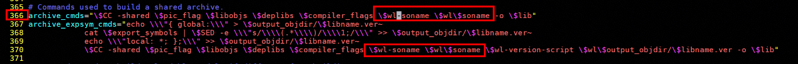
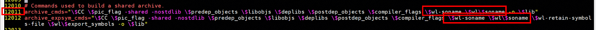
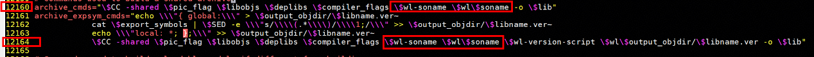
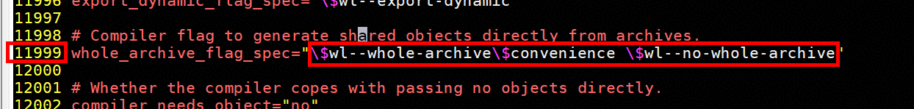
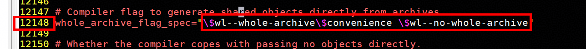

国产软硬件生态融合 1：ABACUS 基于华为鲲鹏 920 处理器的编译和使用指南
作者：张笑扬，邮箱：zxypku21@stu.pku.edu.cn
作者：周徐源，邮箱：xy_z@pku.edu.cn
审核：蒋巩明，邮箱：jianggongming@huawei.com
审核：陈默涵，邮箱：mohanchen@pku.edu.cn
最后更新时间：2026/05/12
一、背景
在国产算力自主化与科研软件生态国产化的大背景下，国产开源第一性原理计算软件 ABACUS 与华为鲲鹏 920 的深度融合，超越了普通的软件编译与平台迁移，成为国产高端硬件与自研科研软件生态协同共建的关键抓手；鲲鹏 920 作为国产高性能 ARM 架构核心算力底座，支撑着国内高性能计算与科研集群建设，ABACUS 软件可用于材料模拟、凝聚态计算等前沿领域，二者完成编译适配并稳定运行，既能打破国外软硬件生态壁垒，也为国产算力规模化承载自主科研软件、构建完整生态闭环筑牢基础，因此梳理一套可复现、可落地的 ABACUS 鲲鹏 920 编译流程极具现实价值，本文将从环境依赖、工具链配置到源码编译与运行调优进行完整实操讲解，为科研人员和集群运维在国产软硬件平台部署使用 ABACUS 提供标准化参考。
二、鲲鹏 920 处理器：为科学计算而生的高性能 ARM 平台
鲲鹏 920（Kunpeng 920）是华为于 2019 年推出的数据中心高性能处理器，基于 ARMv8.2 架构，采用先进的 7nm 工艺制造。作为一款面向服务器和数据中心打造的计算芯片，鲲鹏 920 在高性能计算、大数据分析、分布式存储等场景中展现出卓越的能力。
性能表现上，鲲鹏 920 单处理器整型计算性能 SPECint Benchmark 评分超过 930，超出业界标杆 25%。处理器最高可集成 64 个物理核心，主频达 2.6 GHz，配合 8 通道 DDR4 内存控制器（速率 2933MT/s），内存带宽较上一代提升 60%。同时，处理器原生集成 PCIe 4.0（IO 带宽提升 66%）和 100GE RoCE 网络（带宽提升 4 倍），大幅降低 I/O 延迟，为数据密集型计算任务提供了充沛的吞吐能力。
生态建设上，鲲鹏计算产业经过多年发展已日趋成熟。截至 2025 年，鲲鹏已与超过 7000 家合作伙伴共同孵化 20000 余个解决方案，在中国服务器市场份额突破 22%。操作系统层面，openEuler 开源累计部署超 1260 万套；软件生态层面，主流的编译工具链（GCC/LLVM）、数学库、MPI 通信库等均已完成 ARM 架构适配与深度优化。鲲鹏提出的“一码多芯”开发模式进一步降低了跨架构迁移成本，使得科学计算软件如 ABACUS 能够在该平台上高效运行。
在这样的软硬件背景下，将 ABACUS（原子算筹）第一性原理计算软件移植编译至鲲鹏 920 平台，既能充分发挥 ARM 架构多核并行的计算潜力，又能融入日益完善的国产算力生态。本教程将详细介绍在鲲鹏 920 服务器上编译 ABACUS 的完整流程。
三、拉取源码
由于鲲鹏 920 系列机器不是异构平台，因此拉取 ABACUS 开源仓库里的代码，直接编译即可。
git clone https://github.com/deepmodeling/abacus-develop.git
如果出现连接问题，也可以直接下载代码包上传到机器解压。
完成后，进入 abacus-develop 文件夹
cd abacus-develop
四、920 标准版/920 新型号编译
使用集群的 Module 工具，加载以下模块。
module load cmake openmpi-4 scalapack fftw lapack elpa boost cereal openblas-openmp ucx
之后在 abacus-develop 目录下使用这个编译指令
build=build-3.9.0.XX
cmake -B $build
cmake --build $build -j24
注：build= 后面填写你想放置编译后文件的文件夹的名称
注：有可能出现库找不到的情况，这取决于 Module 是否良好配置了各种数学库的路径。你可以参考官方文档来手动配置数学库的路径（https://abacus.deepmodeling.com/en/latest/quick_start/easy_install.html）。例如（仅供参考）：
build=build-3.9.0.XX
export VHPC_ARCH=neon # 标准版
export VHPC_ARCH=sve # 新型号
cmake -B $build \
-DELPA_INCLUDE_DIR=/data/hpc_software/toolchain/gcc/${VHPC_ARCH}/elpa-2024/include/elpa_openmp-2024.05.001/ \
-DELPA_LINK_LIBRARIES=/data/hpc_software/toolchain/gcc/${VHPC_ARCH}/elpa-2024/lib/libelpa_openmp.so.19 \
-DCEREAL_INCLUDE_DIR=/data/hpc_software/toolchain/gcc/${VHPC_ARCH}/cereal-1.3.2/include/ \
-DFFTW3_DIR=/data/hpc_software/toolchain/gcc/${VHPC_ARCH}/fftw-3.3.10/ \
-DSCALAPACK_DIR=/data/hpc_software/toolchain/gcc/${VHPC_ARCH}/scalapack-2.2.2/lib/
cmake --build $build -j24
920 标准版与 920 新型号机器开箱即用，性能良好，这样就能完成安装。在 build 文件夹下找到 abacus_xxxx 可执行文件即可运行，并用于提交任务。
五、920 专业版编译
920 专业版使用矩阵计算单元，支持矩阵运算指令集，且可用核数众多，可以用来进行大规模并行从而获得大幅性能提升。
920 专业版需要使用华为研发的 HMPI 与 kblas。这两个替代了原本的 MPI 通信库和 BLAS 线性代数运算库，同时保持了接口一致，是鲲鹏机器生态良好的体现。可选用 GCC 或 BISHENG-CLANG 进行编译。
A. 基于 GCC 的编译
从 Module 中加载以下数学库
module use /data/hpc_software/toolchain/common/HPCKit/25.2.0/modulefiles/gcc
module load compiler12.3.1/gccmodule hmpi25.2.0/release kml25.2.0/kblas/multi kml25.2.0/kml cmake elpa
如果缺少相关内容，请先检查 Module 内的软件包版本，可能会因为机器进行更新，导致对应库的版本发生了变化。或者联系管理员。
在 abacus-develop 目录下，使用以下指令安装
build=build-3.9.0.XX
CC=mpicc CXX=mpic++ F7=mpif77 FC=mpif90 cmake -B $build
cmake --build $build -j24
同样，如果出现数学库找不到问题，可以进行以下尝试：
- 按照 920 标准版/新型号安装方式，Module 里加载缺少的数学库（不要加载原来的 MPI 和 OpenBLAS）
- 手动配置数学库的位置，例如（仅供参考）：
build=build-3.9.0.XX
CC=mpicc CXX=mpic++ F7=mpif77 FC=mpif90 cmake -B $build \
-DLAPACK_DIR=/data/hpc_software/toolchain/common/HPCKit/25.2.0/kml/gcc/lib/sve512 \
-DSCALAPACK_DIR=/data/hpc_software/toolchain/common/HPCKit/25.2.0/kml/gcc/lib/sve512 \
-DELPA_DIR=$ELPA_ROOT \
-DFFTW3_DIR=/data/hpc_software/toolchain/common/HPCKit/25.2.0/kml/gcc/lib/noarch \
-DFFTW3_INCLUDE_DIR=/data/hpc_software/toolchain/common/HPCKit/25.2.0/kml/gcc/include \
-DCEREAL_INCLUDE_DIR=/data/hpc_software/toolchain/gcc/sme/cereal/include \
-DCEREAL_INCLUDE_DIR=/data/hpc_software/toolchain/gcc/sme/cereal-1.3.2/include \
-DFFTW3_OMP_LIBRARY=/data/hpc_software/toolchain/common/HPCKit/25.2.0/kml/gcc/lib/noarch/libfftw3f.so \
-DBLAS_LIBRARIES=/data/hpc_software/toolchain/common/HPCKit/25.2.0/kml/gcc/lib/sme/kblas/multi/libkblas.so \
-DLAPACK_LIBRARIES=/data/hpc_software/toolchain/common/HPCKit/25.2.0/kml/gcc/lib/sve512/libklapack_full.so \
-DScaLAPACK_LIBRARY=/data/hpc_software/toolchain/common/HPCKit/25.2.0/kml/gcc/lib/sve512/libkscalapack_full.so
cmake --build $build -j24
B. 基于 BISHENG-CLANG 的编译
需要首先编译 clang 版 ELPA
git clone https://gitlab.mpcdf.mpg.de/elpa/elpa.git
cd elpa
# 如果是从 git 获取的源码，需要运行 autogen
./autogen.sh
export LD_LIBRARY_PATH=/HPCKit25.2.0/HPCKit/latest/kml/bisheng/lib/sme/kblas/multi/:$LD_LIBRARY_PATH
KML_ROOT=/HPCKit25.2.0/HPCKit/latest/kml/bisheng
export CC=mpicc
export CXX=mpicxx
export FC=mpif90
export CMAKE_C_FLAGS="-O3 -g -mcpu=hip11 -ffast-math -funroll-loops -flto"
export CMAKE_CXX_FLAGS="-O3 -g -mcpu=hip11 -ffast-math -funroll-loops -flto"
export CMAKE_FORTRAN_FLAGS="-O3 -g -mcpu=hip11 -ffast-math -funroll-loops -flto"
export CFLAGS="-O3 -g -mcpu=hip11 -ffast-math -funroll-loops -flto"
export CXXFLAGS="-O3 -g -mcpu=hip11 -ffast-math -funroll-loops -flto"
export FCFLAGS="-O3 -g -mcpu=hip11 -ffast-math -funroll-loops -flto -I${KML_ROOT}/include"
export LDFLAGS="-L${KML_ROOT}/lib/sme/kblas/multi"
export LIBS="-L/HPCKit/25.1.0/kml/bisheng/lib/sme -lkscalapack_full -lklapack_full -L/HPCKit/25.1.0/kml/bisheng/lib/sme/kblas/multi -lkblas -lkservice -lm"
./configure --prefix=/elpa-install --host=aarch64-unknown-linux-gnu --build=aarch64-unknown-linux-gnu --enable-shared --enable-openmp --disable-sse --disable-sse-assembly --disable-avx --disable-avx2 --disable-avx512
执行完 configure 后修改 libtool 文件内容（由于不识别 x86 参数，把所有 soname、whole-archive 相关的内容删除）：
vim libtool
删除内容如下：





删除后保存退出.
编译并安装。
make -j$(nproc)
make install
安装完成后，将 ELPA 路径添加到环境变量中
export ELPA_HOME=/elpa-install
export LD_LIBRARY_PATH=$ELPA_HOME/lib:$LD_LIBRARY_PATH
export PKG_CONFIG_PATH=$ELPA_HOME/lib/pkgconfig:$PKG_CONFIG_PATH
安装 ABACUS
export toolchain_root=/data/hpc_software/toolchain/bisheng/sme
export VHPC_ARCH=sme
module use /data/hpc_software/modulefiles/common
module use /data/hpc_software/modulefiles/bisheng
module use /data/hpc_software/toolchain/common/HPCKit/25.2.0/modulefiles/bisheng
module load compiler5.0.0.2/bishengmodule hmpi25.2.0/release kml25.2.0/kblas/multi kml25.2.0/kml cmake
export CMAKE_Fortran_FLAGS="${CMAKE_Fortran_FLAGS} -w -O3 -ffast-math -std=legacy -fno-inline-functions -fstrength-reduce -fexpensive-optimizations -fall-intrinsics -flto -foptimize-loops -fveclib=KPL_SVML_SVE -fno-math-errno "
export CMAKE_C_FLAGS="${CMAKE_C_FLAGS} -w -O3 -ffast-math -Wno-implicit-function-declaration -Wno-implicit-int -Wno-return-type -lkml_rt -flto -foptimize-loops -fveclib=KPL_SVML_SVE -fno-math-errno"
export CMAKE_CXX_FLAGS="${CMAKE_C_FLAGS} -w -O3 -ffast-math -Wno-implicit-function-declaration -Wno-implicit-int -Wno-return-type -lkml_rt -flto -foptimize-loops -fveclib=KPL_SVML_SVE -fno-math-errno"
export CMAKE_EXE_LINKER_FLAGS="${CMAKE_EXE_LINKER_FLAGS} -fveclib=KPL_SVML_SVE -fno-math-errno -lm -lksvml"
export LD_LIBRARY_PATH=/data/hpc_software/toolchain/common/HPCKit/25.2.0/kml/bisheng/lib/:$LD_LIBRARY_PATH
export PATH=BiShengCompiler-5.1.0-aarch64-linux/bin/:$PATH
编译和安装
cmake -B build -DCMAKE_INSTALL_PREFIX=${CWD}/bin -DENABLE_LCAO=ON \
-DENABLE_FLOAT_FFTW=ON \
-DFFTW3_DIR=/data/hpc_software/toolchain/common/HPCKit/25.2.0/kml/bisheng/lib/noarch \
-DFFTW3_OMP_LIBRARY=/data/hpc_software/toolchain/common/HPCKit/25.2.0/kml/bisheng/lib/noarch/libfftw3f_omp.so \
-DLAPACK_DIR=/data/hpc_software/toolchain/common/HPCKit/25.2.0/kml/bisheng/lib/sve512 \
-DSCALAPACK_DIR=/data/hpc_software/toolchain/common/HPCKit/25.2.0/kml/bisheng/lib/sve512 \
-DBLAS_LIBRARIES=/data/hpc_software/toolchain/common/HPCKit/25.2.0/kml/bisheng/lib/sme/kblas/multi/libkblas.so \
-DLAPACK_LIBRARIES=/data/hpc_software/toolchain/common/HPCKit/25.2.0/kml/bisheng/lib/sve512/libklapack_full.so \
-DScaLAPACK_LIBRARY=/data/hpc_software/toolchain/common/HPCKit/25.2.0/kml/bisheng/lib/sve512/libkscalapack_full.so -DUSE_ELPA=ON \
cmake --build build -j$(nproc)
六、鲲鹏集群上的作业提交
920 标准版/920 新型号加载相关 Module 后直接运行即可。示例：
module load cmake openmpi-4 scalapack fftw lapack elpa boost cereal openblas-openmp ucx
export OMP_NUM_THREADS=4
mpirun -np 4 ~/abacus-develop-3.9.0.25/build-3.9.0.XX/abacus_2p
对于使用矩阵运算架构的 920 专业版，提交任务请参考以下模板（以 BISHENG-CLANG 版本为例）：
source /data/hpc_software/toolchain/setenv.sh
export VHPC_ARCH=sme
module use /data/hpc_software/modulefiles/common
module use /data/hpc_software/modulefiles/bisheng
module use /data/hpc_software/toolchain/common/HPCKit/25.2.0/modulefiles/bisheng
module load compiler5.0.0.2/bishengmodule hmpi25.2.0/release kml25.2.0/kblas/multi kml25.2.0/kml cmake
# 如果使用GCC
module load elpa
# 如果使用 BISHENG-CLANG
export ELPA_HOME=/elpa-install && export LD_LIBRARY_PATH=$ELPA_HOME/lib:$LD_LIBRARY_PATH && export PKG_CONFIG_PATH=$ELPA_HOME/lib/pkgconfig:$PKG_CONFIG_PATH
export OMP_NUM_THREADS=1 # 920专业版暂不建议使用OPENMP并行
mpirun --map-by ppr:38:numa:pe=1 --bind-to core -n 38 ../../develop/abacus-develop-3.9.0.25-f/build/abacus_2p
920 专业版一定需要绑定核心才能获得最佳速度，若未进行精细的 CPU 核心绑定，MPI 进程会在复杂的 numa 拓扑中随机分布，导致频繁的跨 numa 节点内存访问，延迟和 cache miss 升高。
如果需要跑超过 38 核心，参考以下提交模板
source /data/hpc_software/toolchain/setenv.sh
export VHPC_ARCH=sme
module use /data/hpc_software/modulefiles/common
module use /data/hpc_software/modulefiles/bisheng
module use /data/hpc_software/toolchain/common/HPCKit/25.2.0/modulefiles/bisheng
module load compiler5.0.0.2/bishengmodule hmpi25.2.0/release kml25.2.0/kblas/multi kml25.2.0/kml cmake
# 如果使用GCC
module load elpa
# 如果使用 BISHENG-CLANG
export ELPA_HOME=/elpa-install && export LD_LIBRARY_PATH=$ELPA_HOME/lib:$LD_LIBRARY_PATH && export PKG_CONFIG_PATH=$ELPA_HOME/lib/pkgconfig:$PKG_CONFIG_PATH
export OMP_NUM_THREADS=1
mpirun --map-by numa:pe=1 --bind-to core -n 114 ../../develop/abacus-develop-3.9.0.25-f/build/abacus_2p
大家若有编译和使用问题，欢迎联系本文作者！
附录：ABACUS 相关参考资料
ABACUS 网站访问：http://abacus.ustc.edu.cn/
GitHub 仓库地址为：https://github.com/deepmodeling/abacus-develop
Gitee 镜像仓库地址为：https://gitee.com/deepmodeling/abacus-develop
ABACUS 线上文档教程：https://abacus.deepmodeling.com/en/latest/
ABACUS 线上中文教程：https://mcresearch.github.io/abacus-user-guide/
Github 仓库 Issues 区：https://github.com/deepmodeling/abacus-develop/issues
Github 仓库讨论区：https://github.com/deepmodeling/abacus-develop/discussions
FAQ：https://abacus.deepmodeling.com/en/latest/community/faq.html
ABACUS 上手教程（基于 Bohrium Notebook）：https://nb.bohrium.dp.tech/detail/5515465115